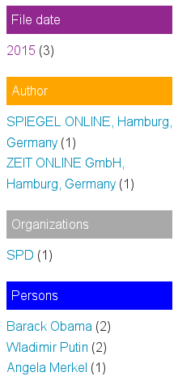

How to integrate Open Data to enhance semantic search, data analysis, text mining & document analysis
How data enrichment with Linked Open Data (LOD) from Open Access databases helps to improve search, find more results, analyse document sets and data sets and how monitoring with Open Data watchlists generates leads for investigative research
Open Data from Open Access databases like WikiData (structured data from Wikipedia) can be used to improve analysis and navigation of your private data.
It can generate leads for important documents where important concepts or people occur.
Or your private data or documents can be enriched with additional data or structures from open data.
So the integration of Open Data with Open Source research tools enables easier search, more and better search results, analytics and interactive filters (faceted search), watchlists and other useful and powerful features by a combination of textmining and data analysis methods like entity matching and entity tagging, analytics or automatic classification by machine learning.
Computing all this with open source software on your own computer or server all that is possible without giving away sensitive informations because of privacy issues with any cloud services.
Sharing data and Open Data
If there is an existing list, dictionary, vocabulary or thesaurus or if the entries are available in other structured format like an semantic web ontology yet i.e. from other tools or some open data sources, you don't need to enter manually each named entity like persons, organizations, locations or important words or concepts to the thesaurus to use them for analytics, navigation, aggregated overview and interactive filters.

Tagging named entities like people or organizations
 Using this list of important names or ontology the named entities tagger can tag documents in which this names occur.
{kind=link}
Leads for research by matching watchlists
So you get leads for potential relevant documents where important concepts or people on such a watchlist or ontology occur, i.e. if analysing a large unknown document set or dataset or after getting new documents or news.
Analytics, aggregated overviews and exploration
By the faceted search you get an aggregated overview for the different facets like concepts, persons, locations or organizations showing, how many documents matching this entity.
Interactive filters (faceted search)
You can use this overviews or named entities as interactive filter to narrow down search results. So a click to a facet (i.e. an organization) will drill down the search results to fewer documents, matching this additional facet/filter, too.
Free open data source (Linked Open Data from WikiData)
One of the biggest and an universal Open Data source is WikiData, the structured multilingual database from Wikipedia.
From this structured datasource you can select and download lists of names for example of important people like politicians for analysis of your document sets, navigation and interactive filters, enable semantic search to find aliases or names in other languages, watchlists, data for data enrichment or data for machine learning.
Finds more by thesauri of synonyms and irregular verbs (Wiktionary)
Another usage of Open Data is to use a dictionary and thesaurus like the Wikipedia Wiktionary or an Libre Office or Open Office hunspell dictionary to extend search queries or indexes so you are able to find synonyms and irregular verbs, too.
Automatic classification or disambiguation (machine learning)
Another use of open data from WikiData or Wikipedia is to get good training data for classification and disambiguation.
So we get for example the possibility to guess which meaning names or words with more than one meaning (homonyms) by comparing the context with big open data like Wikipedia by machine learning algorithms for automatic classification to disambiguate the named entity.
Privacy and data protection: Investigative Research with Open Source Software
With our free Open Source software and research tools you can use Open Data from open data sources on the internet even for investigative research in sensitive documents or other sensitive data with enhanced privacy needs like for example needed for investigative journalism:
Since there is no cloud but only other peoples or companies computers, we want to compute our data ourselves with Free Software.
So after download and import of an open dataset our open source search engine computes all matching and watching for this Open Data list or ontology only on your own laptop or server. There is no upload of documents content fotr analysis nor upload of matching names to a cloud service.
Big Data analysis by Open Data
This is even possible for many named entities or list entries and very much data or and huge document collections.
In some research, text mining and data analysis projects we cross referenced documents with lists and ontologies with hundreds of thousands of names like politicians, species, materials or other important concepts to look for.
In such cases you should import the list to thesaurus editor or ontologies manager for entity tagging before indexing the documents so most entities can be extracted more performant while and before indexing instead of later searches and document updates for each entity, which will need some time in such cases.